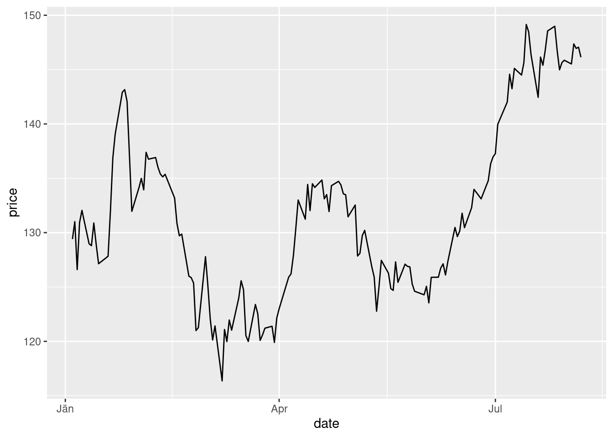

Chapter 7 Overflow Material
7.0.1 The stock price of Apple
Since the context of this course is Computational Finance, let us discuss an example from
Finance first: The
stock price of Apple is recorded daily. Let us use this example to make a first step in
loading data into R. We have already learned how we could have a first quick glance at
how they look like. We will discuss various ways to get financial data as we go along. For this
initial example we have prepared a data file for the Apple stock price from January 2021 to
the beginning of September 2021 and we have stored the data (in some format) locally. In
practice we often will not have data ready fro retrieval but will have to retrieve them from the
web, from a database or from other sources but let us not worry about these practical details
for the moment. We have stored the data in an R internal format, called RDS and we have stored the
file apple_stock_prices.RDS in a folder in our current working directory which we have
called data. Under this assumption we read these data and assign them to an R object
using the R function readRDS. Let us call
this object apple_stock:
apple_stock <- readRDS("data/apple_stock_price.RDS")To have a first look at the data, we use the R-function head(). This is a very useful function
to glance at the data because instead of shwoing us the entire, possibly very big, dataset it
shows us just the first few lines. We can even specify how many by specifying a parameter
for the number of lines we want to display, say 10:
head(apple_stock, n = 10)## # A tibble: 10 x 8
## symbol date open high low close volume adjusted
## <chr> <date> <dbl> <dbl> <dbl> <dbl> <dbl> <dbl>
## 1 AAPL 2021-01-04 134. 134. 127. 129. 143301900 129.
## 2 AAPL 2021-01-05 129. 132. 128. 131. 97664900 130.
## 3 AAPL 2021-01-06 128. 131. 126. 127. 155088000 126.
## 4 AAPL 2021-01-07 128. 132. 128. 131. 109578200 130.
## 5 AAPL 2021-01-08 132. 133. 130. 132. 105158200 131.
## 6 AAPL 2021-01-11 129. 130. 128. 129. 100384500 128.
## 7 AAPL 2021-01-12 128. 130. 127. 129. 91951100 128.
## 8 AAPL 2021-01-13 129. 131. 128. 131. 88636800 130.
## 9 AAPL 2021-01-14 131. 131 129. 129. 90221800 128.
## 10 AAPL 2021-01-15 129. 130. 127 127. 111598500 127.Now we see what is contained in the data. They are organized in a table. Each column is a variable, starting with the stock symbol of Apple, then the date, the opening price, the highest, the lowest and the closing price, the volume and the adjusted volume. Every row is a record of the values of these variables for a particular trading day in the time period we consider.
Now let us make a chart of the closing price at each day over the time period of our data using
the plotting function qplot() we already used for visualizing the outcomes of
repeated die rolls. In order to do so, we create two new R objects which contain the date
and the column close. This means we need to select these two columns.
We will learn more systematically how to do this in R. For the moment we just show one way to achieve this for the particular example:
date <- apple_stock$date
price <- apple_stock$closeNow we load the library ggplot2 and use the qplot function. As arguments we give the
qplot function the series of dates and the series of closing prices and set a display
option, called geom to “line” to get a line graph (instead of the qplot default of a point
graph)
library("ggplot2")
qplot(date,price, geom = "line")
Now assume we are at the end of our price data series, at August 6th 2021. We want to think about the uncertain price tomorrow. This is our random exmeriment. What would be a suitable state space?
What are the possible prices Apple can attain? The minimum price is zero. The maximum price can not be determined. In principle it could be infinite. The state space here would be an open interval of real numbers, \({\cal S} = [0, \infty)]\). Quite complicated.
We could define the state space for the price change, in another way, by thinking about three events: Up, denoted by \(u\) when the stock price increases, Even, denoted \(e\) when the stock price does not move, and Down, denoted \(d\) when the price decreases. From this perspective the state space would be \({\cal S} = \{u,e,d\}\). A bit simpler than before.
There are more elegant and powerful ways to read and plot data in R. We used this particular example just to show you one particular way. More details and more general insights how to do this we will develop as we go along.
7.0.2 The change of a stock price two days from now
Suppose we want to study the random experiment of observing a stock price move twice. This is a random experiment because whether the coin will go up (U) or down (D) is uncertain before we make the observation, but once the closing price is published, the outcomes are clear. The sample space is \({\cal S}=\{UU, UD, DU, DD \}\). The event that the closing price at the end of the first trading day will be higher is \(A = \{UU, UD\}\). The event that the stock price does not decrease is \(B = \{UU\}\), which is also a basic outcome of the random experiment.
While this example is so simple that we do not need a computer, let us take the opportunity to introduce a new R function, which computes all possible combinations of objects. Let us first create a virtual price move by listing the possible moves at day 1 and day 2.
day_1 <- c("U", "D")
day_2 <- c("U", "D")There are some new things here. Let us explain. First, while we used gray boxes to show you input and output of code as it would appear if you interact on the console we use here a very convenient feature in RStudio, which we will use from now on.
We compose these lecture notes in a document
format, which allows the mixing of text and code. Whenever we write a piece of R code, it is shown
in a gray box, as before but without the > prompt. When you move the cursor
on the gray box
now, you will see a copy icon in the upper right
corner of the box. This will allow you to copy this
code snippet and use it in another document or on your console to execute it.
The second new thing is that we have used a new data type, which we will
need very often: characters.
Characters can be used to form strings and R has many powerful functions to work with and operate
on strings. We will see many examples of this later.
Strings are always between " ", like this. Like
numbers, strings can be stored in objects and referred to later. But what we need here is actually
two strings in one vector. This is achieved by using the c() function of R.
c stands for concatenation
and here it stores both basic outcomes of a price move in two single vectors day_1 and day_2.
We can now pass these two virtual oves to the R function expand.grid().
This function will produce
the sample space of two price moves by computing all possible combinations of sequences of U and D
that can occur at the end of two trading days.
expand.grid(day_1, day_2)## Var1 Var2
## 1 U U
## 2 D U
## 3 U D
## 4 D DDon’t worry at the moment if you do not understand what the output
format is and why the columns are
headed by Var1 and Var2 followed by the symbols <fctr>. We will come back to this.
Before we look at yet another sample, let us mention that this setup, simple as it may seem, plays a very important role in the theory of random price fluctuations of asset prices and in option pricing and we will encounter it later in more detail.
7.0.3 Birthdays and the Blockchain
Suppose we are interested in the probability that at least two students in a class of size \(n\) share the same birthday. This is a very famous probability problem which is often referred to as the birthday paradox. It is technically not really a paradox but it is called like this because this probability behaves in a surprising way if viewed as a function of the class size \(n\). We discuss the problem in the context of computational finance because it has also an important application in the design of crypto-currencies and the new field of decentralized Finance, which make heavy use of cryptographic methods.
We will talk about actual probabilities in the next lecture. But in this lecture we have learned that we can only talk meaningfully about probabilities if we know the random experiment and the basic outcomes. One interesting aspect with respect to the concepts of basic outcomes and sample space is that the birthday paradox example is an instance where we cannot simply write down the sample space like in the example of rolling a die.
The event we are interested in is that at least two students in a randomly selected sample of \(n\) out of class have the same birthday. It turns out that it is easier to think about the complementary event, which is that all students have different birthdays.
In terms of possible basic outcomes there are \(365^n\) possible outcomes if there are \(n\) students in the class. Each of them can have a birthday at any of the 365 days in the year and in total there are \(n\) students.
So the sample space \({\cal S}\) for the conceptual random experiment that all \(n\) randomly selected students have different birthdays is the set \({\cal S} =\{1,2,\ldots, 356^n\}\) of basic outcomes. For 10 students this would be
365^10## [1] 4.1969e+25basic outcomes for all \(n\) students having different birthdays.
The birthday problem also plays an important role in cryptography, and its concept of hash-functions. Hash-functions play a key role in the implementation of Cryptocurrencies. Let us explain this context and what it has to do with Crypto:
A hash-function maps a string of arbitrary but finite length to a fixed length string of output. A very frequently used hash-function in practice is the function SHA-256, which maps its input to a string of 256 bits2. So, you could for instance give the text of the bible as an input to SHA-256 and it would map this into a 256-bit string, which functions like a finger print of this text. This is a so called one-way-function meaning that it is easy to evaluate or compute but it is practically impossible to learn from the value the initial argument by computing the inverse.
Hash-Functions are key pillars of modern cryptography, where they play a major role in message authentication. This is because it is impossible to modify the input without significantly changing the output. So in our previous example, if you only dropped one letter from the text of the bible it would hash into a completely different value than the previous version which still contained this letter and you would immediately see from comparing the hash-values that something has changed.
The collision problem for hash-functions is formally equivalent to the birthday problem. The event we are interested in is that at least two input strings hash-to the same value. Again it is easier to think about the complementary event that all inputs hash to a different value.
If the range of the hash-function is \(M\) and the hash-function maps into a 256 bit string then there are \(2^{256}\) basic outcomes. Since the hash-function maps a large string onto a smaller string it is possible that there are two different strings \(x \neq y\) mapping to the same value \(\text{hash}(x)=\text{hash}(y)\). This would be a problem for message authentification because it would give the same “fingerprint” for two different strings. For a cryptographically secure hash function it is therefore required that the probability of such a collision should be small enough to exclude a collision in all practically relevant circumstances. We will take up the example again in the next lecture.
A bit, short for binary digit, is defined as the most basic unit of data in telecommunications and computing. Each bit is represented by either a 1 or a 0↩︎